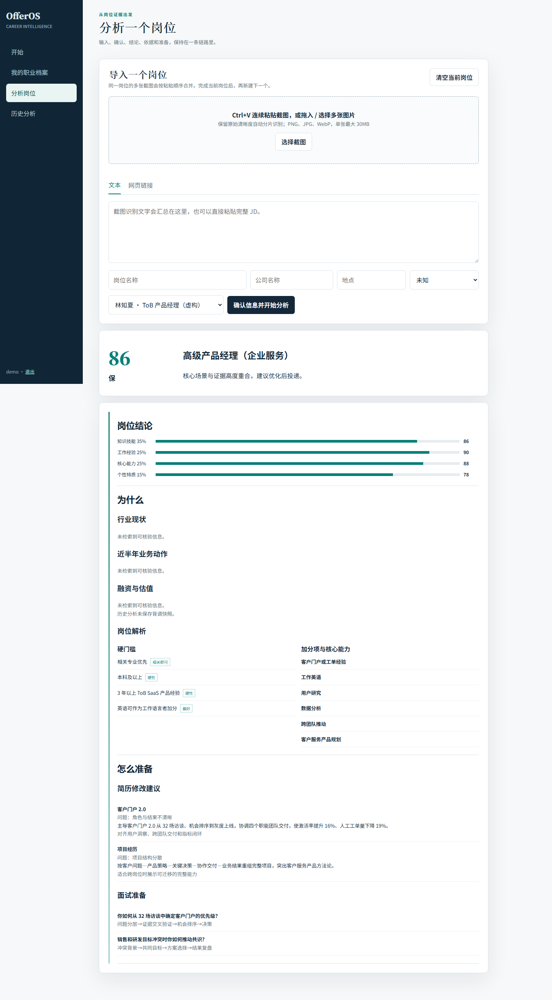

TRACK 01SIDE A
OfferOS · 岗位行动报告

LIVE PRODUCT CAPTURE真实 Demo · 决策 → 证据 → 行动
OfferOS
把“我适不适合这个岗位”，变成可解释、可行动的决策。
从简历解析、JD 解码、三维评分到六模块行动报告，独立完成 PRD、产品设计、 多 Agent 职责边界与云服务器上线。
ROLE独立产品设计与落地
METHOD多 Agent / 可解释评分
OUTPUT0 → 1 上线
问题定义规则与 Agent原型验证部署上线
“硬门槛独立校正，不让加权平均掩盖关键风险。”